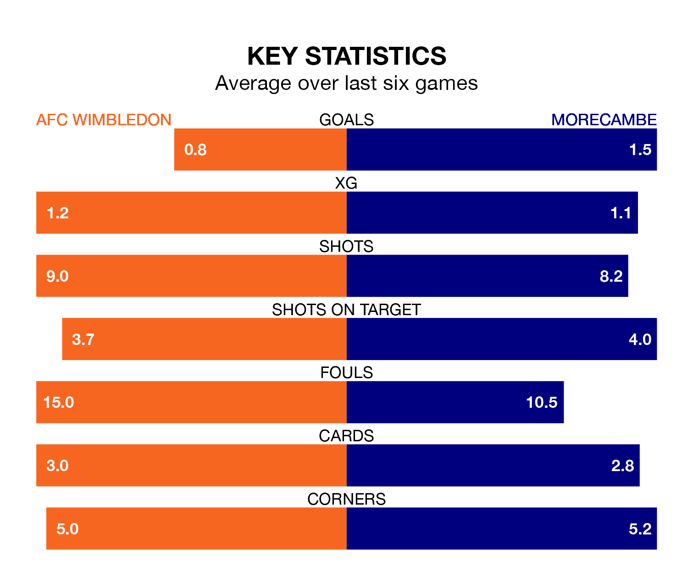

AFC Wimbledon are heavy favourites to keep all three points at home in Saturday's kick-off against Morecambe.
The Dons, who sit 10th in EFL League Two with 31 games played, are priced at 1.4 to seal victory at the Cherry Red Records Stadium.
Sitting one place behind them in the table, Morecambe are 4.9 to win with *Betting Company*, while the draw is at 4.2.
In Alex Bass, Wimbledon can rely on one of the league's safest pair of hands. He has kept 11 clean sheets in his 31 appearances this season, and only one other 'keeper – Mansfield Town's Christy Pym – has been able to prevent the opposition scoring on more occasions in EFL League Two.
In Morecambe's net, Stuart Moore has three clean sheets in 12 games. He has conceded a goal every 74 minutes, 10% more often than the 82 minutes between goals for Bass.
With 46 goals in 30 games so far this season, the Shrimps are scoring at the league's average rate with 1.5 goals per game. And they are conceding more than average, letting in 47 goals at a rate of 1.6 per game.
The Dons are also average scorers, with 1.5 goals per game. They have conceded 1.2 goals per game.
The home team are in mixed form in EFL League Two, with two wins and a draw from their last six games.
With four wins and a draw over that period, the visitors' form is much better – they have taken 13 points from 18, compared to Wimbledon's seven.
In the last three years, Wimbledon and Morecambe have played each other on three occasions. They won one each, and they drew once.
Their last meeting was on October 28, when Morecambe won 4-1 at home.
Wimbledon's last match was on Tuesday, a 2-0 loss against Accrington Stanley.
Morecambe beat Tranmere Rovers 3-2 last time out, also on Tuesday, with Charlie Brown, Jacob Davenport and Jordan Michael Slew on the scoresheet.
Updated: 12:06 (UTC), 15/02/24